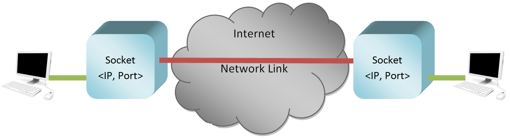

Socket Programming
I socket sono oggetti software gestiti dal Sistema Operativo. Sono gli unici responsabili per qualunque connessione di rete. Anzi... più precisamente una connessione di rete non è altro che uno scambio di dati fra due socket! E chi chiede al sistema operativo di creare i socket? Le applicazioni!!!
I socket permettono anche ai dispositivi di veicolare contemporaneamente più connessioni logiche (ad esempio, due schede di un browser aperte) attraverso un'unica connessione fisica! Più precisamente, per ogni dispositivo fisico di connessione alla rete sono disponibili 65.536 porte logiche per la possibile creazione di altrettanti socket!

Come si evince chiaramente dalla figura, Ogni socket si individua grazie alla coppia di informazioni:
IP,PORTA LOGICA.Ogni connessione alla rete viene individuata univocamente (nell'unità di tempo) dalla coppia di socket che fanno da mittente e destinatario della stessa.
Il livello di trasporto può fornire due tipi di servizi, definiti in due protocolli diversi:
- Il protocollo TCP, per le connessioni punto a punto (1 a 1); connesso e affidabile
- Il protocollo UDP per le connessioni semplici (anche broadcast e multicast) senza alcuna sovrastruttura: non connesso e non affidabile.
Ok... la teoria la sappiamo! Vediamo il codice adesso.
Socket in Python
Come dicevamo, i socket sono oggetti software gestiti dal Sistema Operativo e invocati dalle applicazoini. Come si crea un socket in Python??
import socket
# Oggetto Socket TCP
tcp_socket = socket.socket(socket.AF_INET, socket.SOCK_STREAM)
# Oggetto Socket UDP
udp_socket = socket.socket(socket.AF_INET, socket.SOCK_DGRAM)
Anche qui... non mi sembra complicato :)
Faremo adesso una prova di comunicazione client-server tramite il protocollo UDP.
Comunicazione client/server UDP in Python
Vediamo il codice che crea un server con il protocollo UDP. Questo semplice programma si mette in attesa di comunicazioni. Poi a seconda del messaggio arrivato risponde OK se il numero di lettere arrivate è pari, ERR se sono dispari.
import socket
localIP = "192.168.110.200" # Qui ci va il tuo IP, come stringa
localPort = 20000 # Qui ci va una porta (> 1024), come intero
# UDP Socket Object
udp_socket = socket.socket(socket.AF_INET, socket.SOCK_DGRAM)
# Bind to address and ip
udp_socket.bind( (localIP, localPort) )
print("UDP server up and listening")
# Listen for incoming datagrams
while True:
message,address = udp_socket.recvfrom(1024)
print("Message from Client:", message.decode() )
print("Client IP Address:", address)
msgFromServer = "OK"
if len(message) % 2 == 1:
msgFromServer = "Err"
bytesToSend = str.encode(msgFromServer)
# Sending a reply to client
udp_socket.sendto(bytesToSend, address)
Ovviamente abbinato al server, che deve essere in esecuzione, ci va un client che deve tentare la connessione e l'invio allo stesso. Ecco il codice che permette di inviare al server un messaggio qualunque.
import socket
Server_IP = "192.168.110.200" # Qui ci va l'IP del dispositivo che esegue il tuo server, come stringa
Server_PORT = 20000 # Qui ci va la porta del tuo server (la devi sapere), come intero
MESSAGE = input("text to send: ")
print("UDP target IP: ", Server_IP)
print("UDP target port: ", Server_PORT)
print("message: ", MESSAGE)
# UDP Socket Object
udp_socket = socket.socket(socket.AF_INET, socket.SOCK_DGRAM)
udp_socket.sendto(MESSAGE.encode(), (Server_IP, Server_PORT))
message,address = udp_socket.recvfrom(1024)
print("Reply from Server:", message.decode() )
print("Server IP Address:", address)
Adesso basta solo provare :)
Esercizi su socket UDP
Alcuni esercizi per prendere confidenza con i socket UDP
Esercizio 3301
Implementare un peer ovvero un programma che contiene contemporaneamente client e server UDP. Eseguirne due copie in grado di colloquiare alternativamente fra loro: il primo manda un msg di testo al secondo, il secondo lo vede e manda una risposta (digitata dall'utente) al primo, il primo legge la risposta e può rispondere... e così all'infinito (finché non si interrompe il programma).
Esercizio 3301 bis
Implementare un peer ovvero un programma che contiene contemporaneamente client e server UDP. Eseguirne tre o quattro copie (opportunamente configurate) in grado di colloquiare fra loro secondo un ordine prestabilito: il primo manda un msg di testo agli altri tre, poi il secondo, poi il terzo, poi il quarto e si ricomincia. Tutti ricevono i messaggi di tutti
Esercizio 3301 ter
Implementare un server in grado di servire quattro persone che parlano fra di loro. Questo riceve un msg da uno qualsiasi dei client e lo invia agli altri tre. Implementare un client in grado di inviare messaggi al server e di riceverli. Modificare il client in modo da stabilire l'ordine con cui le persone parlano (vedi 3301 bis).
Esercizio 3301 quater
Implementare un server in grado di servire un numero imprecisato di client. Ogni volta che un client invia un messaggio questi viene aggiunto alla lista dei client a cui inviare i messaggi degli altri. Il client dell'esercizio precedente dovrebbe funzionare bene anche con questo server.
Esercizio 3301 quinquies GUI
Il server è quello dell'esercizio precedente. Il client ha le stesse funzionalità di prima, ma implementa una interfaccia grafica in wxPython.
Esercizio 3302
Implementare un peer ovvero un programma che contiene contemporaneamente client e server UDP. Entrambi possono scrivere quando vogliono e visualizzano i messaggi che arrivano nell'istante in cui lo fanno.
Esercizio 3302 GUI
Come l'esercizio precedente, ma fornendo una GUI scritta in wxPython
Esercizio 3303
Coppia di programmi che permettono di inviare file di testo semplice fra programma e programma. Individuare il file (ad esempio con l'ausilio della libreria pathlib) e inviate la stringa [NOME_FILE + "\n\n" + CONTENUTO_FILE ]. Il client è in grado di salvare nella stessa cartella dello script il file con il nome inviato.
Esercizio 3303 GUI
Come l'esercizio precedente, ma fornendo una GUI scritta in wxPython. Eventualmente nel programma di ricezione si può permettere all'utente di selezionare DOVE salvare il file
Comunicazione client/server TCP in Python
TCP è un protocollo ben più complicato di UDP! Vi espongo le differenze fondamentali:
- il socket del server, prima di poter ricevere connessioni, dovrà porsi in modalità
listen - il client, prima di poter inviare dati al server, dovrà stabilire una
connessionecon il socket del server - Una volta stabilita la connessione, i dati tra i due socket saranno veicolati tramite essa, con i metodi
sendallerecv - I dati di passaggio nella connessione sono per forza di cose ordinati! (A questo ci pensa TCP... noi non dobbiamo fare nulla. Solo sapere...)
- Alla fine dello scambio di dati la connessione va chiusa con il metodo
closeda parte di entrambi i socket!!!
Vediamo un esempio di codice che implementa un semplice client e un semplice server basati su TCP. Il client potrà inviare qualsiasi messaggio vuole, mentre il server risponderà comunque ok. Se il client invia la stringa close il server saluta con bye e chiude la connessione.
import socket
HOST = "127.0.0.1" # Standard loopback interface address (localhost)
PORT = 65432 # Port to listen on (non-privileged ports are > 1023)
tcp_socket = socket.socket(socket.AF_INET, socket.SOCK_STREAM)
tcp_socket.bind( (HOST, PORT) )
tcp_socket.listen()
print(f"listening on socket ({HOST}:{PORT})...")
conn, addr = tcp_socket.accept()
if conn:
print(f"Connected by {addr}")
while True:
data = conn.recv(1024)
message = data.decode()
print("Received:", message)
if message == "close":
conn.sendall( "bye".encode() )
break
conn.sendall( "OK".encode() )
conn.close()
Qui sotto invece trovate il codice che implementa il client TCP.
import socket
HOST = "127.0.0.1" # The server's hostname or IP address
PORT = 65432 # The port used by the server
tcp_socket = socket.socket(socket.AF_INET, socket.SOCK_STREAM)
tcp_socket.connect( (HOST, PORT) )
while True:
message = input("Message to send: ")
tcp_socket.sendall( message.encode() )
data = tcp_socket.recv(1024)
message = data.decode()
print(f"Received: {data.decode()}")
if message == "bye":
tcp_socket.close()
break
Esercizi su socket TCP
Esercizio 3401
Implementare un peer ovvero un programma che contiene contemporaneamente client e server TCP. Eseguirne due copie in grado di colloquiare alternativamente fra loro: il primo manda un msg di testo al secondo, il secondo lo vede e manda una risposta (digitata dall'utente) al primo, il primo legge la risposta e può rispondere... e così all'infinito (finché non si interrompe il programma).
Esercizio 3401 bis
Implementare un peer ovvero un programma che contiene contemporaneamente client e server TCP. Eseguirne tre o quattro copie (opportunamente configurate) in grado di colloquiare fra loro secondo un ordine prestabilito: il primo manda un msg di testo agli altri tre, poi il secondo, poi il terzo, poi il quarto e si ricomincia. Tutti ricevono i messaggi di tutti
Esercizio 3401 ter
Implementare un server in grado di servire quattro persone che parlano fra di loro. Questo riceve un msg da uno qualsiasi dei client e lo invia agli altri tre. Implementare un client in grado di inviare messaggi al server e di riceverli. Modificare il client in modo da stabilire l'ordine con cui le persone parlano (vedi 3401 bis).
Esercizio 3401 quater
Implementare un server in grado di servire un numero imprecisato di client. Ogni volta che un client invia un messaggio questi viene aggiunto alla lista dei client a cui inviare i messaggi degli altri. Il client dell'esercizio precedente dovrebbe funzionare bene anche con questo server.
Esercizio 3401 quinquies GUI
Il server è quello dell'esercizio precedente. Il client ha le stesse funzionalità di prima, ma implementa una interfaccia grafica in wxPython.
Esercizio 3402
Implementare un peer ovvero un programma che contiene contemporaneamente client e server TCP. Entrambi possono scrivere quando vogliono e visualizzano i messaggi che arrivano nell'istante in cui lo fanno.
Esercizio 3402 GUI
Come l'esercizio precedente, ma fornendo una GUI scritta in wxPython
Esercizio 3403
Coppia di programmi che permettono di inviare file di testo semplice fra programma e programma. Individuare il file (ad esempio con l'ausilio della libreria pathlib) e inviate la stringa [NOME_FILE + "\n\n" + CONTENUTO_FILE ]. Il client è in grado di salvare nella stessa cartella dello script il file con il nome inviato.
Esercizio 3403 GUI
Come l'esercizio precedente, ma fornendo una GUI scritta in wxPython. Eventualmente nel programma di ricezione si può permettere all'utente di selezionare DOVE salvare il file